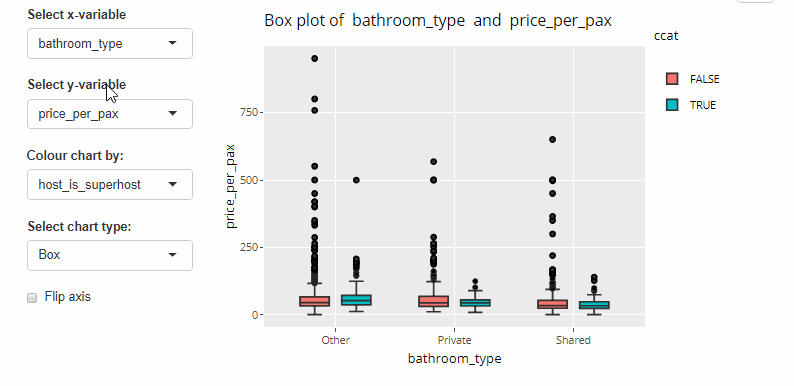
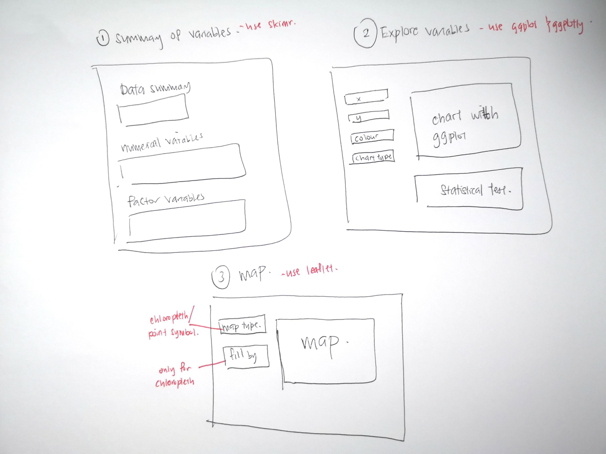

Prototype testing for the Exploratory module for OurShinyPET
This was written as part of the requirements for the Visual Analytics module for MITB.
1. Introduction
1.1 Overview of application
The increasing availability of data has resulted in increased demand for data driven decisions. Although there is an extensive range of commercial statistical tools, they are often subscription-based and demand good technical knowledge to mine and draw insights from. Therefore, it may not appeal to the average user.
The Shiny package of R provides an interface to build interactive web applications using R language. Furthermore, Shiny provides for fully interactive visualisation with its reactive functions, while retaining the statistical framework of R.
Here, we aim to develop an application that is user-friendly and interactive R Shiny that would enable everyone to make data based decisions without needing programming, statistical backgrounds or expensive subscriptions.
We have selected Airbnb data as a base case given its extensive data (i.e location, pricing, host status, etc.). With this application, users (host, visitors) can analyse their needs to compare across other listings. There are three parts to this shiny application - Text Mining, Exploratory and Confirmatory, and Predictive Analytics.
Please visit our website at https://ourshinypet.netlify.app/ for more details.
1.2 Objective of this report
This report covers the Exploratory and Confirmatory Analysis module.
The objectives of this report are to
- identify and select the appropriate R packages for the final R shiny application,
- develop prototypes of the module, and
- prepare storyboard sketch for the sub-module design.
During prototype testing, 3 aspects were taken into consideration:
- interactivity
- statistical testing
- compatibility with R Shiny
2. Literature review
Prior to building our prototype, we examined two applications as part of our literature review. We examined how the analyses were performed in relation to interactive web approach and visual analytics techniques and gaps both in the applications.
The Radiant Shiny application developed by Vincent Nijs is a powerful interface for business analytics using R. The two modules - radiant.data and radiant.basic offerss tools to visualise and perform statistical analysis. Radiant utilises the ggplot2 package for visualisation and R’s stats package for statistical testing. For radiant.data pivot tab, users are able to create a wide range of static charts with the given selections. While for the radiant.basics module, users are expected to have a basic understanding of statistical testing methods as they are first required to select their testing method before proceeding. Furthermore, the statistical testing and visualisation are done separately, hence users are not able to visualise and perform inferential statistics on one page.
Meanwhile, the MEPHAS Shiny application by Zhou, Y., Leung, Sw., Mizutani, S. et al. (2020) is an integrated web application for statistical analysis to support medical and pharmaceutical analysis. To overcome the statistical knowledge hurdle, the MEPHAS application has an interactive user friendly flow chart that helps user find the right statistical method. The list of statistical test and visualisations covered are extensive, and the process flow is logical and easy to understand to an average user. Furthermore, MEPHAS has seamlessly integrated interactivity for both the visual plots and statistical outputs. However, different statistical test methods are located on web server, i.e parametric t test on this webpage and non-parametric t-test on this webpage. Hence, the transition from one testing method to another is relatively more tedious with regards to user experience.
Taking the two applications into consideration, our application intends to enhance user experience by incorporating interactivity to the graph, automating statistical testing that caters to the average user with a minimal statistical background, and presenting statistical test and interactive graph in a single tab that would enhance visual experience.
3 Extracting, wrangling and preparing the input data
Listings of Airbnbs in Singapore were extracted from InsideAirbnb.com
3.1 Load packages
We will focus on utilising packages from the Tidyverse family.
The following packages were mainly used in exploring and developing our prototype.
readr,tibble,dplyr,tidyrto load, process and prepare data for final exploration.ggplot2to create exploratory plots.plotlyto create interactive plots for exploratory analysis.ggstatsplotto create plots with statistical tests included within plot.
packages = c('tidyverse', 'ggplot2', 'skimr', 'naniar', 'kableExtra','dplyr', 'ggstatsplot','plotly',
'readr','haven','funModeling','crosstalk','data.table', 'skimr', 'ggmosaic','ggExtra','ggpubr',
'sf','tmap','sp', 'leaflet','widgetframe')
for(p in packages){
if(!require(p, character.only = T)){
install.packages(p)
}
library(p, character.only = T)
}
3.2 Load data
The data was loaded using read_csv() of the readr package, which reads delimited files into a tibble.
listings <- read_csv("./data/raw/listings.csv")
View data
The dataset has 4,255 observations and 74 variables.
At the intial glimpse, we noticed a number of redundant variables such as id, listing_url, etc. These should be removed as they do not add value to any analysis.
Further, textual variables such as description, name etc, were removed these will be done in the Text Mining module. To the extent useful, textual data was converted to structured data through feature engineering (length of text).
Additionally, we noticed that some variables are in the wrong data type - price, host_response_rate, host_acceptance_rate are in character format, when they should be numerical.
glimpse(listings)
## Rows: 4,255
## Columns: 74
## $ id <dbl> 49091, 50646, 56334, 7160~
## $ listing_url <chr> "https://www.airbnb.com/r~
## $ scrape_id <dbl> 2.021013e+13, 2.021013e+1~
## $ last_scraped <date> 2021-01-27, 2021-01-28, ~
## $ name <chr> "COZICOMFORT LONG TERM ST~
## $ description <chr> "<b>The space</b><br />Th~
## $ neighborhood_overview <chr> NA, "The serenity & quiet~
## $ picture_url <chr> "https://a0.muscache.com/~
## $ host_id <dbl> 266763, 227796, 266763, 3~
## $ host_url <chr> "https://www.airbnb.com/u~
## $ host_name <chr> "Francesca", "Sujatha", "~
## $ host_since <date> 2010-10-20, 2010-09-08, ~
## $ host_location <chr> "Singapore", "Singapore, ~
## $ host_about <chr> "I am a private tutor by ~
## $ host_response_time <chr> "within a few hours", "a ~
## $ host_response_rate <chr> "100%", "0%", "100%", "10~
## $ host_acceptance_rate <chr> "N/A", "N/A", "N/A", "100~
## $ host_is_superhost <lgl> FALSE, FALSE, FALSE, FALS~
## $ host_thumbnail_url <chr> "https://a0.muscache.com/~
## $ host_picture_url <chr> "https://a0.muscache.com/~
## $ host_neighbourhood <chr> "Woodlands", "Bukit Timah~
## $ host_listings_count <dbl> 2, 1, 2, 8, 8, 8, 8, 6, 1~
## $ host_total_listings_count <dbl> 2, 1, 2, 8, 8, 8, 8, 6, 1~
## $ host_verifications <chr> "['email', 'phone', 'face~
## $ host_has_profile_pic <lgl> TRUE, TRUE, TRUE, TRUE, T~
## $ host_identity_verified <lgl> TRUE, TRUE, TRUE, TRUE, T~
## $ neighbourhood <chr> NA, "Singapore, Singapore~
## $ neighbourhood_cleansed <chr> "Woodlands", "Bukit Timah~
## $ neighbourhood_group_cleansed <chr> "North Region", "Central ~
## $ latitude <dbl> 1.44255, 1.33235, 1.44246~
## $ longitude <dbl> 103.7958, 103.7852, 103.7~
## $ property_type <chr> "Private room in apartmen~
## $ room_type <chr> "Private room", "Private ~
## $ accommodates <dbl> 1, 2, 1, 6, 3, 3, 6, 2, 1~
## $ bathrooms <lgl> NA, NA, NA, NA, NA, NA, N~
## $ bathrooms_text <chr> "1 bath", "1 bath", "1 ba~
## $ bedrooms <dbl> 1, 1, 1, 2, 1, 1, 1, 1, 1~
## $ beds <dbl> 1, 1, 1, 3, 1, 2, 7, 1, 1~
## $ amenities <chr> "[\"Washer\", \"Elevator\~
## $ price <chr> "$80.00", "$80.00", "$66.~
## $ minimum_nights <dbl> 180, 90, 6, 90, 90, 90, 1~
## $ maximum_nights <dbl> 360, 730, 14, 1125, 1125,~
## $ minimum_minimum_nights <dbl> 180, 90, 6, 90, 90, 90, 1~
## $ maximum_minimum_nights <dbl> 180, 90, 6, 90, 90, 90, 1~
## $ minimum_maximum_nights <dbl> 360, 730, 14, 1125, 1125,~
## $ maximum_maximum_nights <dbl> 360, 730, 14, 1125, 1125,~
## $ minimum_nights_avg_ntm <dbl> 180.0, 90.0, 6.0, 90.0, 9~
## $ maximum_nights_avg_ntm <dbl> 360, 730, 14, 1125, 1125,~
## $ calendar_updated <lgl> NA, NA, NA, NA, NA, NA, N~
## $ has_availability <lgl> TRUE, TRUE, TRUE, TRUE, T~
## $ availability_30 <dbl> 30, 30, 30, 30, 30, 30, 3~
## $ availability_60 <dbl> 60, 60, 60, 60, 60, 60, 6~
## $ availability_90 <dbl> 90, 90, 90, 90, 90, 90, 9~
## $ availability_365 <dbl> 365, 365, 365, 365, 365, ~
## $ calendar_last_scraped <date> 2021-01-27, 2021-01-28, ~
## $ number_of_reviews <dbl> 1, 18, 20, 20, 24, 48, 29~
## $ number_of_reviews_ltm <dbl> 0, 0, 0, 0, 0, 0, 0, 0, 2~
## $ number_of_reviews_l30d <dbl> 0, 0, 0, 0, 0, 0, 0, 0, 0~
## $ first_review <date> 2013-10-21, 2014-04-18, ~
## $ last_review <date> 2013-10-21, 2014-12-26, ~
## $ review_scores_rating <dbl> 94, 91, 98, 89, 83, 88, 8~
## $ review_scores_accuracy <dbl> 10, 9, 10, 9, 8, 9, 9, 9,~
## $ review_scores_cleanliness <dbl> 10, 10, 10, 8, 8, 9, 8, 9~
## $ review_scores_checkin <dbl> 10, 10, 10, 9, 9, 9, 9, 9~
## $ review_scores_communication <dbl> 10, 10, 10, 10, 9, 9, 9, ~
## $ review_scores_location <dbl> 8, 9, 8, 9, 8, 9, 9, 9, 1~
## $ review_scores_value <dbl> 8, 9, 9, 9, 8, 9, 8, 9, 9~
## $ license <lgl> NA, NA, NA, NA, NA, NA, N~
## $ instant_bookable <lgl> FALSE, FALSE, FALSE, TRUE~
## $ calculated_host_listings_count <dbl> 2, 1, 2, 8, 8, 8, 8, 7, 1~
## $ calculated_host_listings_count_entire_homes <dbl> 0, 0, 0, 0, 0, 0, 0, 1, 0~
## $ calculated_host_listings_count_private_rooms <dbl> 2, 1, 2, 8, 8, 8, 8, 6, 1~
## $ calculated_host_listings_count_shared_rooms <dbl> 0, 0, 0, 0, 0, 0, 0, 0, 0~
## $ reviews_per_month <dbl> 0.01, 0.22, 0.17, 0.18, 0~
**3.3 Remove unnecessary variables **
To avoid having too many variables that would overwhelm the user, we have dropped variables that are not useful for analysis.
listings2 <- listings %>%
select(-id, -listing_url, -scrape_id, -neighborhood_overview, -picture_url, -host_id, -host_url, -host_name, -host_location,
-host_thumbnail_url, -host_picture_url, -first_review, -last_review, -last_scraped, -calendar_last_scraped,
-has_availability, -host_has_profile_pic, -calendar_updated, -license, -bathrooms, -neighbourhood, -host_neighbourhood)
3.4 Create new variables
i) Feature engineering - Convert unstructured variables to structured variables
Textual variables such as name, description, host_about, bathroom_text , bathrooms_text, host_verifications_count were converted into structured variables by counting the length of the text.
# convert textual data to structured data
listings3 <- listings2 %>%
mutate_at(vars(name,description,host_about),str_squish) %>% #remove all whitespaces
mutate(name_length = str_count(name, ".")) %>% #count characters
mutate(description_length = str_count(description, ".")) %>%
mutate(host_about_length = str_count(host_about, ".")) %>%
select(-name, -description, -host_about)
# convert textual data to structured data
listings3 <- listings3 %>%
mutate(bathrooms_text = tolower(bathrooms_text)) %>%
mutate(bathrooms_text = str_replace(bathrooms_text, "half", "0.5")) %>%
mutate(bathroom = parse_number(bathrooms_text)) %>%
mutate(bathroom_type = case_when(
str_detect(bathrooms_text, "private") ~ "Private",
str_detect(bathrooms_text, "share") ~ "Shared",
TRUE ~ "Other")
) %>%
select(-bathrooms_text)
# replace amenities with count of amenities
listings3 <- listings3 %>%
mutate(amenities_count = sapply(str_split(amenities, ","), length)) %>%
select(-amenities)
# replace host_verification with count of verification
listings3 <- listings3 %>%
mutate(host_verifications_count = sapply(str_split(host_verifications, ","), length)) %>%
select(-host_verifications)
ii) Derive the number of days since a host joined Airbnb platform - days_joined
Using the variable host_since, which is in date format, we have calculated the number of days since the host started hosting Airbnb guests.
listings4 <- listings3 %>%
mutate(days_joined = as.numeric(as.Date("2021/01/01",
"%Y/%m/%d")-host_since)) %>%
select(-host_since)
iii) Derive property type
The property_type variable comprises both room and property type (e.g. Private room in apartment). We extracted the property type from property_type variable.
# get actual property type (remove room type component) from property_type
listings5 <- listings4 %>%
mutate(property_type = tolower(property_type)) %>%
mutate(property_type = case_when(
grepl(" in ", property_type, fixed = TRUE) == TRUE ~ gsub("^.*in ", "", property_type),
TRUE ~ gsub("entire ", "", property_type)
))
3.5 Change data type
- Change price-related attribute from character format to numeric.
- Convert character and logical variables to factor data type.
listings5 <- listings5 %>%
mutate_at(vars(c(contains("price"))), ~as.numeric(str_replace(., "\\$", ""))) %>% #price to numeric
mutate_at(vars(c(contains("rate"))), ~as.numeric(str_replace(., "\\%", ""))) #rate to numeric
#remove listing with $0 price
listings6 <- listings5 %>%
filter(price!=0)
listings6 <- listings6 %>%
mutate(across(where(is.character), as.factor)) %>% #convert character to factor
mutate(across(where(is.logical), as.factor)) #convert logical to factor
3.6 Consolidate similar levels
For the host_response_time variable, there are 6 levels of which 2 are N/A and NA.
As such, we have renamed NA to N/A as one level.
listings6$host_response_time[is.na(listings6$host_response_time)] <- "N/A"
final_listing <- subset(listings6, !is.na(host_is_superhost))
3.7 View final listing
Review the final output after wrangling.
glimpse(final_listing)
## Rows: 4,203
## Columns: 53
## $ host_response_time <fct> within a few hours, a few~
## $ host_response_rate <dbl> 100, 0, 100, 100, 100, 10~
## $ host_acceptance_rate <dbl> NA, NA, NA, 100, 100, 100~
## $ host_is_superhost <fct> FALSE, FALSE, FALSE, FALS~
## $ host_listings_count <dbl> 2, 1, 2, 8, 8, 8, 8, 6, 1~
## $ host_total_listings_count <dbl> 2, 1, 2, 8, 8, 8, 8, 6, 1~
## $ host_identity_verified <fct> TRUE, TRUE, TRUE, TRUE, T~
## $ neighbourhood_cleansed <fct> Woodlands, Bukit Timah, W~
## $ neighbourhood_group_cleansed <fct> North Region, Central Reg~
## $ latitude <dbl> 1.44255, 1.33235, 1.44246~
## $ longitude <dbl> 103.7958, 103.7852, 103.7~
## $ property_type <fct> apartment, apartment, apa~
## $ room_type <fct> Private room, Private roo~
## $ accommodates <dbl> 1, 2, 1, 6, 3, 3, 6, 2, 1~
## $ bedrooms <dbl> 1, 1, 1, 2, 1, 1, 1, 1, 1~
## $ beds <dbl> 1, 1, 1, 3, 1, 2, 7, 1, 1~
## $ price <dbl> 80, 80, 66, 174, 80, 80, ~
## $ minimum_nights <dbl> 180, 90, 6, 90, 90, 90, 1~
## $ maximum_nights <dbl> 360, 730, 14, 1125, 1125,~
## $ minimum_minimum_nights <dbl> 180, 90, 6, 90, 90, 90, 1~
## $ maximum_minimum_nights <dbl> 180, 90, 6, 90, 90, 90, 1~
## $ minimum_maximum_nights <dbl> 360, 730, 14, 1125, 1125,~
## $ maximum_maximum_nights <dbl> 360, 730, 14, 1125, 1125,~
## $ minimum_nights_avg_ntm <dbl> 180.0, 90.0, 6.0, 90.0, 9~
## $ maximum_nights_avg_ntm <dbl> 360, 730, 14, 1125, 1125,~
## $ availability_30 <dbl> 30, 30, 30, 30, 30, 30, 3~
## $ availability_60 <dbl> 60, 60, 60, 60, 60, 60, 6~
## $ availability_90 <dbl> 90, 90, 90, 90, 90, 90, 9~
## $ availability_365 <dbl> 365, 365, 365, 365, 365, ~
## $ number_of_reviews <dbl> 1, 18, 20, 20, 24, 48, 29~
## $ number_of_reviews_ltm <dbl> 0, 0, 0, 0, 0, 0, 0, 0, 2~
## $ number_of_reviews_l30d <dbl> 0, 0, 0, 0, 0, 0, 0, 0, 0~
## $ review_scores_rating <dbl> 94, 91, 98, 89, 83, 88, 8~
## $ review_scores_accuracy <dbl> 10, 9, 10, 9, 8, 9, 9, 9,~
## $ review_scores_cleanliness <dbl> 10, 10, 10, 8, 8, 9, 8, 9~
## $ review_scores_checkin <dbl> 10, 10, 10, 9, 9, 9, 9, 9~
## $ review_scores_communication <dbl> 10, 10, 10, 10, 9, 9, 9, ~
## $ review_scores_location <dbl> 8, 9, 8, 9, 8, 9, 9, 9, 1~
## $ review_scores_value <dbl> 8, 9, 9, 9, 8, 9, 8, 9, 9~
## $ instant_bookable <fct> FALSE, FALSE, FALSE, TRUE~
## $ calculated_host_listings_count <dbl> 2, 1, 2, 8, 8, 8, 8, 7, 1~
## $ calculated_host_listings_count_entire_homes <dbl> 0, 0, 0, 0, 0, 0, 0, 1, 0~
## $ calculated_host_listings_count_private_rooms <dbl> 2, 1, 2, 8, 8, 8, 8, 6, 1~
## $ calculated_host_listings_count_shared_rooms <dbl> 0, 0, 0, 0, 0, 0, 0, 0, 0~
## $ reviews_per_month <dbl> 0.01, 0.22, 0.17, 0.18, 0~
## $ name_length <int> 33, 31, 11, 35, 30, 26, 3~
## $ description_length <int> 1000, 589, 880, 1000, 990~
## $ host_about_length <int> 326, 79, 326, 772, 772, 7~
## $ bathroom <dbl> 1.0, 1.0, 1.0, 1.0, 0.5, ~
## $ bathroom_type <fct> Other, Other, Other, Priv~
## $ amenities_count <int> 7, 12, 8, 25, 21, 16, 22,~
## $ host_verifications_count <int> 9, 8, 9, 5, 5, 5, 5, 7, 5~
## $ days_joined <dbl> 3726, 3768, 3726, 3625, 3~
4. Testing protypes for submodule
4.1 Observe variables
This allows users to understand variables available for exploration.
skimDf <- final_listing %>%
skim_without_charts()
sum_data <- skim(final_listing) %>% summary()
sum_n <-if ("numeric" %in% skimDf$skim_type){
skimDf %>%
yank('numeric') %>%
select('skim_variable','n_missing','complete_rate',
'mean','sd','p0','p50','p100') %>%
arrange(-n_missing)
}
sum_f <-if ("factor" %in% skimDf$skim_type){skimDf %>% yank("factor")}
all <- DT::datatable(sum_data)
n <- DT::datatable(sum_n)
f <- DT::datatable(sum_f)
widgetframe::frameWidget(all)
widgetframe::frameWidget(n)
widgetframe::frameWidget(f)
4.2 Plotting univariate charts
For univariate exploratory analysis, we would like to be able to plot :
- Distribution - through histogram for numerical variables and barplot for categorical variables,
- Outlier of selected variable - through boxplot.
4.2.1 Plotting distribution with histogram and bar plots
4.2.1.1 With ggstatsplot
Upon reading ggstatsplot documentation, we realised that ggbarstats(), which plots barplots, currently only supports two variable barplots
See extract from the documentation of the y argument.
The variable to use as the columns in the contingency table. Please note that if there are empty factor levels in your variable, they will be dropped. Default is
NULL.IfNULL, one-sample proportion test (a goodness of fit test) will be run for thexvariable. Otherwise an appropriate association test will be run. This argument can not beNULLforggbarstatsfunction.
Hence the visual below only applicable to numerical variables using gghistostats.
gghistostats automates the testing methodology based on inputs. Furthermore, gghistostats allows adjustments to the confident level and to the statistical approach with 4 options parametric, nonparametric, robust and bayes.
set.seed(123) # for reproducibility
g_hist <- gghistostats(
data = final_listing,
x = review_scores_rating,
title = paste('Distribution of review_scores_rating'),
normal.curve = TRUE,
normal.curve.args = list(color = "#00A699", size = 1),
bar.fill = '#FF5A5F', #use airbnb colour
ggtheme = ggplot2::theme_classic(),
type = 'parametric',
conf.level = 0.95,
)
g_hist
Attempt to add interactivity to ggstatsplot chart using ggplotly
We tried to wrap the ggstatsplot chart with ggplotly(). However by doing so, we would lose key metrics such as the fitted normal curve and statistical test results. As clarified by the author here, this is a ggplot2 issue.
histly <- ggplotly(g_hist)
widgetframe::frameWidget(histly)
4.2.1.2 With ggplot2
To work around ggstatsplot limitation while retaining interactivity, we have used ggplot2 to visualise the variables and included computed statistical test below. However, we are unable to retain the fitted normal curve. We will remove the fit normal curve code from our final shiny application.
For the statistical tests, we have assumed normality as our dataset has 4000+ observations. Hence, we will use the
- Single mean
t.test()for numerical variables to compare a single mean to the mean value of the population. - Single proportion
prop.test()for categorical variables to compare a single proportion to the population proportion.
From the histogram and test results, review_scores_rating are left-skewed with mean of 91.4 and median 95.
hist <- ggplot(final_listing, aes(x = review_scores_rating)) +
ggtitle("Distribution of review_scores_rating") +
xlab('review_scores_rating') +
theme_bw() +
geom_histogram(bins = 10,
color = '#767676',
fill = '#FF5A5F',
aes(y=..density..,
fill=..count..),
alpha=0.5) +
stat_function(fun = dnorm,
args = list(mean = mean(final_listing$review_scores_rating),
sd = sd(final_listing$review_scores_rating))) + #normal curve doesn't appear
geom_vline(aes(xintercept=mean(final_listing$review_scores_rating,na.rm=T)),
color="#00A699",
linetype="dashed",
size=1)+
geom_vline(aes(xintercept=median(final_listing$review_scores_rating,na.rm=T)),
color="#484848",
linetype="dashed",
size=1)
bar <- ggplot(final_listing, aes(x = room_type)) +
ggtitle("Distribution of room_type") +
xlab('room_type') +
theme_bw() +
geom_histogram(stat = 'count',
color = '#767676',
fill = '#FF5A5F')
histly2 <- ggplotly(hist)
widgetframe::frameWidget(histly2)
t.test(final_listing$review_scores_rating,mu = 100, alternative = 'two.sided',conf.level = 0.95)
##
## One Sample t-test
##
## data: final_listing$review_scores_rating
## t = -37.452, df = 2468, p-value < 2.2e-16
## alternative hypothesis: true mean is not equal to 100
## 95 percent confidence interval:
## 91.01510 91.90916
## sample estimates:
## mean of x
## 91.46213
4.2.2 Plotting outliers with boxplot
ggstatsplot currently doesn’t not have any graph to plot a single variable boxplot for outlier observations. As such, I have used ggplotly() and ggplot2 to create and interactive chart.
Here we observe that the outliers are those less than 70.
boxchart <- ggplot(final_listing,
aes(x = '',
y = review_scores_rating,
colour = '#FF5A5F')) +
geom_boxplot() +
coord_flip() +
stat_boxplot(geom ='errorbar') +
stat_summary(fun.y=mean, geom="point", shape=5, size=4)+
labs(title = "Outlier boxplot using ggplot and ggplotly") +
xlab('review_scores_rating') +
theme_classic() +
theme(legend.position = 'none')
boxly <- ggplotly(boxchart)
widgetframe::frameWidget(boxly)
4.3 Bivariate exploratory and confirmatory analysis
For bivariate analysis, we would like to be able to plot 3 main types of interactions between variables -
-
2 numerical variables - Scatterplot
-
2 categorical variables - mosaic plot
-
1 numerical and 1 categorical - box/violin plot
4.3.1 Plotting numerical variables with scatterplot
4.3.1.1 With ggMarginal()
ggMarginal() of the ggExtra package adds marginal plots to ggplot2 by wrapping over the existing ggplot2 chart. It is very quick and easy way of plotting marginal plots of existing ggplot2 charts. However we noted that the chart does not with plotly.
p1 <- ggplot(final_listing,
aes(host_listings_count, review_scores_rating, colour = host_is_superhost)) +
geom_point()
p2<-ggMarginal(p1, groupColour = TRUE, groupFill = TRUE)
p2
4.3.1.2 With ggstatsplot
ggscatterstats is able to replicate ggMarginal() chart overlayed with statistical test.
ggscatterstats(
data = final_listing,
x = review_scores_rating,
y = amenities_count,
conf.level = 0.95,
xlab = "Review_scores_rating",
ylab = "amenities_count",
marginal.type = 'density',
title = 'Scatterplot of using ggstatsplot')
Furthermore, ggsctterstats allows for group visualisation and testing of selected factor, simply by changing a few lines to the existing code above. This package also allows for different marginal charts by changing the marginal.type.
grouped_ggscatterstats( #changed this
data = final_listing,
x = review_scores_rating,
y = amenities_count,
grouping.var = host_is_superhost, #added this
conf.level = 0.95,
type = 'pearson',
xlab = "Review_scores_rating",
ylab = "amenities_count",
marginal.type = 'boxplot', #boxplot instead of density
plot.grid.args = list(nrows =1, ncol = 2)) #to view in one row
4.3.1.3 using ggplot2 and ggplotly()
By using facet_wrap() and ggplotly(), we can plot an interactive chart grouped by selected factor (i.e host_is_superhost). However correlation test must be done separately for these two groups (superhost and non-superhost), which may be difficult to implement in shiny given that different variables have different number of factor levels.
The correlation results below is a combined test of superhost and non-superhost. We observed that the p-value generated by cor.test is the same as the p-value generated by ggscatterstats.
scatter <- ggplot(final_listing, aes(x = review_scores_rating, y= amenities_count)) +
geom_point(aes(fill = host_is_superhost)) +
geom_smooth(method = 'lm', se = FALSE) +
facet_wrap(vars(host_is_superhost)) +
ggtitle('Scatterplot using ggplot2')
scatterly <- ggplotly(scatter)
widgetframe::frameWidget(scatterly)
cor.test(final_listing$review_scores_rating, final_listing$amenities_count, conf.level = 0.95)
##
## Pearson's product-moment correlation
##
## data: final_listing$review_scores_rating and final_listing$amenities_count
## t = 6.9507, df = 2467, p-value = 4.636e-12
## alternative hypothesis: true correlation is not equal to 0
## 95 percent confidence interval:
## 0.09968637 0.17706953
## sample estimates:
## cor
## 0.1385895
4.3.2 Plotting categorical variables - Mosaic plot
4.3.2.1 With ggstatsplot
ggbarstats(data = final_listing,
x = host_is_superhost,
y = room_type,
title = paste('Mosaic plot using ggstatsplot'),
type = 'parametric',
conf.level = 0.95,
proportion.test = TRUE,
ggtheme = ggplot2::theme_classic())
4.3.2.2 Using ggmosaic, ggplot2 and ggplotly()
m <- ggplot(final_listing) +
geom_mosaic(aes(x= product(host_is_superhost, room_type),
fill = host_is_superhost)) +
labs(
title = paste("Mosaic plot using ggmosaic and plotly"),
x = 'room_type',
y = 'host_is_superhost') +
theme(axis.text.y=element_blank(),
axis.ticks.y=element_blank(),
axis.text.x = element_text(angle = 90))
## chisq test
chisq <- chisq.test(x = final_listing$host_is_superhost,y = final_listing$room_type)
#output
mly <- ggplotly(m)
widgetframe::frameWidget(mly)
chisq
##
## Pearson's Chi-squared test
##
## data: final_listing$host_is_superhost and final_listing$room_type
## X-squared = 49.379, df = 3, p-value = 1.083e-10
4.3.3 Plotting numerical and categorical variabes - Box and violin plot
4.3.3.1 Using ggstatsplot
ggbetweenstats(
data = final_listing,
x = 'host_is_superhost',
y = 'price',
title = 'Violin plot using ggstatsplot',
type = 'parametric',
conf.level = 0.95,
pairwise.comparisons = TRUE,
pairwise.display = 'significant',
p.adjust.method = 'holm',
ggtheme = ggplot2::theme_classic()
)
4.3.3.2 Using ggplot2 and ggplotly()
Here we used ggpubr function of stat_compare_means() to include the p-value into the interactively chart. Similarly, we have cross checked the p-value to the t.test and ggbetweenstats to ensure that all the results are consistent. Here, the p-value is > 0.05, this means that the average price difference between host and superhost is significant.
In our example below, the categorical variable has 2 levels, hence the t.test was used.
For categorical variables with more than 2 levels, the anova test will be used using anova_test(). Should the anova_test() be significant, the tukey_hsd() will be perform to show where the differences lie.
base <- ggplot(final_listing, aes(host_is_superhost, y = price)) +
labs(
title = 'Boxplot and violin plot using ggplot2',
x = 'host_is_superhost',
y = 'price')
bbox <- geom_boxplot(aes(fill = host_is_superhost),outlier.shape = NA)
box <- base + bbox + stat_compare_means(method = 't.test')
boxly <- ggplotly(box)
widgetframe::frameWidget(boxly)
t.test(price ~ host_is_superhost, final_listing, var.equal = FALSE)
##
## Welch Two Sample t-test
##
## data: price by host_is_superhost
## t = -0.59367, df = 1100.4, p-value = 0.5529
## alternative hypothesis: true difference in means is not equal to 0
## 95 percent confidence interval:
## -11.557634 6.188317
## sample estimates:
## mean in group FALSE mean in group TRUE
## 135.7682 138.4529
4.4 Mapping Airbnb
4.4.1 Point symbol map
Point symbol maps displays each listing as a point. We have used the tmap and leaflet during our prototype testing.
4.4.1.1 With tmap
Subzone boundaries were extract from data.gov.sg, which were used to draw the boundaries within Singapore.
tmap allows for customisation (i.e title, facet by select factor, etc.). tmap can be made interactive by calling the tmap_mode('view') function, which we have shown in the chloropleth map below. Furthermore, tmap can be used with shiny through the renderTmap wrapper.
#load subzone data
mpsz <- st_read(dsn = 'data/spatial',
layer = 'MP14_SUBZONE_WEB_PL',
crs = 3414)
## Reading layer `MP14_SUBZONE_WEB_PL' from data source `E:\suyiinang\shinyPET\content\english\blog\exploratory\data\spatial' using driver `ESRI Shapefile'
## Simple feature collection with 323 features and 15 fields
## Geometry type: MULTIPOLYGON
## Dimension: XY
## Bounding box: xmin: 2667.538 ymin: 15748.72 xmax: 56396.44 ymax: 50256.33
## Projected CRS: SVY21 / Singapore TM
#transform
singapore <- st_transform(mpsz, 4326)
#convert long lat to sf object
final_listing_exN <- subset(final_listing, !is.na(host_is_superhost))
listings_sf <- st_as_sf(final_listing_exN,
coords = c('longitude', 'latitude'),
crs = 4326) %>%
st_transform(crs = 3414)
#plot map
p_map <-tm_shape(mpsz) +
tm_polygons() +
tm_shape(listings_sf) +
tm_bubbles(col = 'host_is_superhost',
size = 'price',
border.col = 'black',
border.lwd = 1,
alpha = 0.8)+
tm_facets(by='host_is_superhost',
nrow = 1 ,
sync = TRUE)+
tm_layout(main.title = 'Point Symbol map by price and host_is_superhost',
legend.outside.position = 'bottom',
legend.stack = 'horizontal')
p_map
4.4.4.2 With leaflet
Plotting a point symbol map using leaflet is relatively easy and straight forward as it uses longitude and latitude.
We need not do a point in polygon mapping, as done for tmap above, which maps longitude & latitude/neighbourhood to subzones. Such mapping may not be available for certain countries/areas.
leaf_map <- leaflet(data = final_listing) %>%
addTiles() %>%
addCircleMarkers(lng = ~longitude,
lat = ~latitude,
label = ~as.character(final_listing$host_is_superhost),
clusterOptions = markerClusterOptions())
leaf_map
4.4.2 Chloropleth Map
With tmap
When using tmap for chloropleth mapping, the dataset had to be summarised prior to joining with the subzone data. This may be tricky to implement using the reactive function of Shiny to summarise the dataset for mapping. We also experienced some trouble adding avg_price to the tooltip.
# load subzone map
mpsz2 <- st_read(dsn = 'data/spatial',
layer = 'MP14_SUBZONE_WEB_PL',
quiet = TRUE) %>%
group_by(PLN_AREA_N) %>%
summarise(geometry = sf::st_union(geometry))
# collapse dataframe and summarise price by neighbourhood
listing_summary <- final_listing %>%
group_by(neighbourhood_cleansed) %>%
summarise(count = n(),
avg_price = mean(price),
min_price = min(price),
max_price = max(price)) %>%
mutate_at(.vars = vars(neighbourhood_cleansed), .funs= funs(toupper))
# join by neighbourhood and planning area
airbnb_map <- right_join(mpsz2,listing_summary, c("PLN_AREA_N" = 'neighbourhood_cleansed'))
# create map
map <- tm_shape(mpsz2)+
tm_polygons()+
tm_shape(airbnb_map) +
tm_fill('avg_price',
n = 6,
style = 'quantile',
palette = 'Blues')+
tm_borders(alpha = 0.5)
# make map interactive
tmap_mode('view')
c_map <- tmap_leaflet(map) #blogdown unable to render interactive tmap
frameWidget(c_map)
With leaflet
Plotting the chloropleth map using geojson data extracted from InsideAirbnb. We felt that leaflet was relatively straight forward and easy to customise compared to using the subzone file and tmap.
However, we noted that the mapping of the neighbourhoods is not accurate. We are investigating this issue.
# load geojson file
hood <- geojsonio::geojson_read('data/neighbourhoods.geojson', what = 'sp')
# assign palette based on numeric factors
mypalette <- colorNumeric("viridis", NULL , reverse = TRUE)
labels <- sprintf(
"<strong>%s</strong><br/> Avg price: $%g",
listing_summary$neighbourhood_cleansed, round(listing_summary$avg_price,1)
) %>% lapply(htmltools::HTML)
# create map
l_m <- leaflet(hood) %>%
addTiles() %>%
addProviderTiles('Esri.WorldGrayCanvas') %>% #grey background
addPolygons(stroke = TRUE,
color = 'white',
weight = 1,
smoothFactor = 0.3,
fillOpacity = 1,
fillColor = ~mypalette(log10(listing_summary$avg_price)), #log for better differentiation
label = labels) %>%
addLegend("bottomright", pal = mypalette, values = ~listing_summary$avg_price,
title = "Avg Price",
labFormat = labelFormat(prefix = "$"),
opacity = 1
)
frameWidget(l_m)
5. Testing Shiny interface
Given that our main deliverable is a R Shiny application, we tested the compatibility of both ggstatsplot and ggplot2 with R Shiny, taking ease of scripting and transitioning into consideration.
5.1 R Shiny with ggstatsplot
During our experiment, we noticed that ggstatsplot tends to take a little longer to transition from one plot to another, especially when toggling the statistical approach. Furthermore, we were unable to implement toggling the adjustment method and pairwise display using the typical Shiny input.

Code below
bscols(widths = c(3,9),
list(selectInput(inputId = 'x_cda',
label = 'Select x-variable',
choices = sort(colnames(listing_cat)),
selected = 'host_is_superhost'),
selectInput(inputId = 'y_cda',
label = 'Select y-variable',
choices = sort(colnames(listing_num)),
selected = 'price_per_pax'),
selectInput(inputId = 'type',
label = 'Select statistical approach ',
choices = c("parametric", 'nonparametric','robust','bayes'),
selected = 'parametric'),
selectInput(inputId = 'pairwise',
label = 'Select pairwise option ',
choices = c("significant", 'non-significant','all'),
selected = 'significant'),
selectInput(inputId = 'p_adj',
label = 'Select adjustment method of p-values ',
choices = c("holm", 'hochberg','hommel','bonferroni', 'BH', 'BY', 'fdr', 'none'),
selected = 'holm'),
sliderInput(inputId = 'conf_lev2',
label = "Confidence Interval",
min = 0,
max = 1,
value = 0.95)),
renderPlot({ggbetweenstats(
data = listing_prep,
x = !!colnames(listing_prep[input$x_cda]),
y = !!colnames(listing_prep[input$y_cda]),
title = paste('Comparison of ', input$y_cda, ' by ', input$x_cda),
type = input$type,
conf.level = input$conf_lev2,
pairwise.comparisons = TRUE,
pairwise.display = input$pairwise, #not working
p.adjust.method = input$p_adj, #not working
ggtheme = ggplot2::theme_classic())
})
)
5.2 R Shiny with ggplot2
Syncing ggplot2 charts with Shiny was relatively straight forward, we did not encounter any issues during our testing.

Code below.
output$bbox <- renderPlotly({
x_b_cat <- unlist(listing_prep[,input$x_b_cat])
y_num <- unlist(listing_prep[,input$y_b_num])
ccat <- if(input$box_colour == 'None'){'None'}
else {unlist(listing_prep[,input$box_colour]) }
base <- ggplot(listing_prep, aes(x = x_b_cat, y = y_num)) +
labs(
title = paste(input$chart_type, 'plot of ', input$x_b_cat, ' and ', input$y_b_num),
x = paste(input$x_b_cat),
y = paste(input$y_b_num),
colour = paste(input$box_colour))
add_box_c <- geom_boxplot(aes(fill = ccat), outlier.shape = NA)
add_box <- geom_boxplot(outlier.shape = NA)
add_vio <- geom_violin()
add_vio_c <- geom_violin(aes(fill = ccat))
bbox <- if (input$box_colour != 'None' & input$chart_type == 'Box'){base + add_box_c}
else if(input$box_colour == 'None' & input$chart_type == 'Box'){ base + add_box }
else if(input$box_colour != 'None' & input$chart_type == 'Violin'){ base + add_vio_c }
else { base + add_vio}
flip_chart <- if(input$flipxy){
bbox + coord_flip()
} else {
bbox
}
boxly <- ggplotly(flip_chart) %>% layout(boxmode = "group")
boxly
})
bscols(widths = c(3,9),
list(
selectInput(inputId = 'x_b_cat',
label = 'Select x-variable',
choices = sort(colnames(listing_cat)),
selected = 'review_scores_rating'),
selectInput(inputId = 'y_b_num',
label = 'Select y-variable',
choices = sort(colnames(listing_num)),
selected = 'price_per_pax'),
selectInput(inputId = 'box_colour',
label = 'Colour chart by:',
choices = c('None',sort(colnames(listing_cat))),
selected = 'host_is_superhost'),
selectInput(inputId = 'chart_type',
label = 'Select chart type:',
choices = c('Box', 'Violin'),
selected = 'box'),
checkboxInput(inputId = 'flipxy',
label = 'Flip axis',
value = FALSE)
),
plotlyOutput('bbox'))
6. Assessment of prototype
In deciding on the final prototype of our Shiny application, we assessed prototypes based on 3 main factors - interactivity, availability of statistical tests and compatibility with Shiny.
i) Interactivity - ggplot2 with plotly
Given that the focus of our application is to be user friendly and interactive, ggplot2 charts overlayed with ggplotly() triumphs over ggstatsplot.
ii) Statistical test - ggstatsplot
ggstatsplot is an amazing package, one stop shop for visual plots and extensive statistical background.
iii) Compatability with Shiny - ggplot2
ggstatsplot has some outstanding comparability issues with Shiny as raised in Github as of the date of this report. Furthermore, during our prototype testing, we experienced some issues when attempting to sync shinywidgets to charts.
Meanwhile, ggplot syncs very well with Shiny. During our testing, we noticed that it is relatively easy and efficient to toggle between different chart types given that the base script, ie ggplot(data, aes(x,y)) is constant throughout all the charts required. While different functions are required for ggstatsplot i.e gghistostat() for histogram and ggbarstats for bar charts, toggle between charts is more challenging to script.
v) Map - leaflet
Although tmap fitted our requirements of being interactive and compatible with Shiny, however we found that leaflet was easier to script and customise. Nonetheless, this may just be our personal preference. (this assumes that we are able to rectify the chloropleth map issue)
v) Other matters
We also noticed that ggstatsplot automatically drops NAs, while ggplot2 displays NA values if they are present in the dataset.
7. Conclusion
Based on the above assessment, we found that ggplot2 and leaflet suited our needs better at this juncture.
Although ggplot2 lacks the automation of statistical insights, it has an extensive list of charts available, is interactive with ggplotly() and, more importantly, compatible with R Shiny. The lack of statistical automation can be worked around by performing the statistical test at the server backend.
8. Storyboard - design of the submodule
The exploratory and confirmatory module will consist of 3 parts
- Summary of variables using
skimr, - Explore tab will consist of univariate, bivariate and confirmatory results using
ggplot2,ggplotly()and statistical tests functions, - Point symbol and chloropleth map using
leaflet.
See sketch below for submodule design:

9. References
Zhou, Y., Leung, Sw., Mizutani, S. et al. (2020) MEPHAS: an interactive graphical user interface for medical and pharmaceutical statistical analysis with R and Shiny. BMC Bioinformatics 21, 183. https://doi.org/10.1186/s12859-020-3494-x
Infographic vector created by stories - www.freepik.com